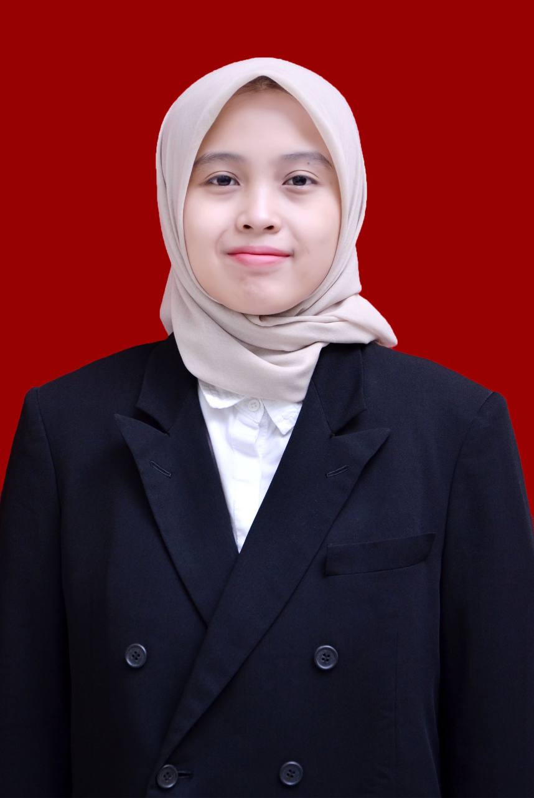

Bachelor's Degree in Agriculture [cite: 98]
Batang, Central Java, Indonesia [cite: 108]
Detail-oriented agriculture graduate with hands-on experience in plant cultivation, pest management, and AI-based precision agriculture, equipped with strong analytical thinking and organizational skills to deliver accurate, reliable, and impactful results in every project. [cite: 99]
A fast learner who adapts quickly to new environments and technologies, with a strong curiosity for continuous growth and an open mindset toward new opportunities, collaborations, and challenges across the agricultural and research field. [cite: 100]
Agriculture professional with strong experience in plant cultivation, pest and disease management, and laboratory teaching support, with additional exposure to AI-based pest detection.
Combining technical knowledge, field understanding, and sharp data handling to deliver dependable results across research and agricultural operations.
I’m a fast learner who adapts quickly to new tools, methods, and environments, enabling me to contribute effectively and add value to every project I work on.
Batang, Central Java, Indonesia
PT Teknologi Kode Indonesia TLab · Yogyakarta, Indonesia
Department of Agrotechnology, Universitas Muhammadiyah Yogyakarta
Department of Agrotechnology, Universitas Muhammadiyah Yogyakarta
Department of Agrotechnology, Universitas Muhammadiyah Yogyakarta
Faculty of Agriculture, Universitas Muhammadiyah Yogyakarta
PT Sinergi Gula Nusantara Pabrik Gula Soedhono · Ngawi, Indonesia
Quality Board of Expro Promoter
Secretary of Exchange Department
Quality Board of Exchange
Exchange Department Staff
External Commission Staff
Conducted thesis research on the effects of tofu dregs as a feeding substrate on the longevity and fecundity of Black Soldier Flies (Hermetia illucens), including experimental design, data analysis, and scientific reporting.
Presented research findings on the effects of tofu dregs as a rearing substrate on the longevity and fecundity of Black Soldier Fly (Hermetia illucens L.), highlighting its potential application in sustainable insect cultivation and waste management.
Chosen as one of five official student representatives for the ASIIN accreditation interview team, after completing an intensive three-month preparation and professional interview training program representing the study program.
Managed administrative and documentation tasks for the Community Service Program (KKN), including proposal preparation, reporting, and coordination of program documentation to support smooth project implementation.
Supported and accompanied a Malaysian international student throughout a three-month exchange program, including assisting with research activities in the Agrotechnology Biochemistry Laboratory at Universitas Muhammadiyah Yogyakarta.
Assisted and accompanied a Japanese international student during a short-term three-day academic and cultural exchange program at Universitas Muhammadiyah Yogyakarta.
Coordinated over 25 international participants from 9 countries, managing effective communication and ensuring smooth execution of event logistics.
Coordinated over 300 national participants across 15 Local Committees in IAAS Indonesia, overseeing large-scale hospitality and schedule integration.
Managed external communications, successfully secured strategic media partnerships with 7 local and 5 international media outlets, and actively promoted events that attracted global participants from 14 countries.
Responsible for designing digital publication materials and managing complex backend Zoom Meeting operations to ensure smooth, organized, and efficient virtual event execution.
Feel free to reach out via the form or through my professional contacts for research, data handling, or precision farming collaboration.